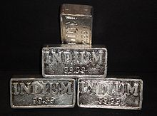

Indium
|  | |||||||||||||||||||||||||||||||||||||||||||||||||||||||||||||||||||||||||||||||||||||||||||||||||||||||||||||||||||||||||||||||||||||||||||||||||||||||||||||||||||||||||||||||||||||||||||||||||||||||||||||||||||||||||||||||||||||
| General properties | |||||||||||||||||||||||||||||||||||||||||||||||||||||||||||||||||||||||||||||||||||||||||||||||||||||||||||||||||||||||||||||||||||||||||||||||||||||||||||||||||||||||||||||||||||||||||||||||||||||||||||||||||||||||||||||||||||||
|---|---|---|---|---|---|---|---|---|---|---|---|---|---|---|---|---|---|---|---|---|---|---|---|---|---|---|---|---|---|---|---|---|---|---|---|---|---|---|---|---|---|---|---|---|---|---|---|---|---|---|---|---|---|---|---|---|---|---|---|---|---|---|---|---|---|---|---|---|---|---|---|---|---|---|---|---|---|---|---|---|---|---|---|---|---|---|---|---|---|---|---|---|---|---|---|---|---|---|---|---|---|---|---|---|---|---|---|---|---|---|---|---|---|---|---|---|---|---|---|---|---|---|---|---|---|---|---|---|---|---|---|---|---|---|---|---|---|---|---|---|---|---|---|---|---|---|---|---|---|---|---|---|---|---|---|---|---|---|---|---|---|---|---|---|---|---|---|---|---|---|---|---|---|---|---|---|---|---|---|---|---|---|---|---|---|---|---|---|---|---|---|---|---|---|---|---|---|---|---|---|---|---|---|---|---|---|---|---|---|---|---|---|---|---|---|---|---|---|---|---|---|---|---|---|---|---|---|---|---|
| Name, symbol | indium, In | ||||||||||||||||||||||||||||||||||||||||||||||||||||||||||||||||||||||||||||||||||||||||||||||||||||||||||||||||||||||||||||||||||||||||||||||||||||||||||||||||||||||||||||||||||||||||||||||||||||||||||||||||||||||||||||||||||||
| Pronunciation | /ˈɪndiəm/ IN-dee-əm |
||||||||||||||||||||||||||||||||||||||||||||||||||||||||||||||||||||||||||||||||||||||||||||||||||||||||||||||||||||||||||||||||||||||||||||||||||||||||||||||||||||||||||||||||||||||||||||||||||||||||||||||||||||||||||||||||||||
| Appearance | silvery lustrous gray | ||||||||||||||||||||||||||||||||||||||||||||||||||||||||||||||||||||||||||||||||||||||||||||||||||||||||||||||||||||||||||||||||||||||||||||||||||||||||||||||||||||||||||||||||||||||||||||||||||||||||||||||||||||||||||||||||||||
| Indium in the periodic table | |||||||||||||||||||||||||||||||||||||||||||||||||||||||||||||||||||||||||||||||||||||||||||||||||||||||||||||||||||||||||||||||||||||||||||||||||||||||||||||||||||||||||||||||||||||||||||||||||||||||||||||||||||||||||||||||||||||
|
|||||||||||||||||||||||||||||||||||||||||||||||||||||||||||||||||||||||||||||||||||||||||||||||||||||||||||||||||||||||||||||||||||||||||||||||||||||||||||||||||||||||||||||||||||||||||||||||||||||||||||||||||||||||||||||||||||||
| Atomic number | 49 | ||||||||||||||||||||||||||||||||||||||||||||||||||||||||||||||||||||||||||||||||||||||||||||||||||||||||||||||||||||||||||||||||||||||||||||||||||||||||||||||||||||||||||||||||||||||||||||||||||||||||||||||||||||||||||||||||||||
| Standard atomic weight (±) | 114.818(1)[1] | ||||||||||||||||||||||||||||||||||||||||||||||||||||||||||||||||||||||||||||||||||||||||||||||||||||||||||||||||||||||||||||||||||||||||||||||||||||||||||||||||||||||||||||||||||||||||||||||||||||||||||||||||||||||||||||||||||||
| Element category | post-transition metal | ||||||||||||||||||||||||||||||||||||||||||||||||||||||||||||||||||||||||||||||||||||||||||||||||||||||||||||||||||||||||||||||||||||||||||||||||||||||||||||||||||||||||||||||||||||||||||||||||||||||||||||||||||||||||||||||||||||
| Group, block | group 13, p-block | ||||||||||||||||||||||||||||||||||||||||||||||||||||||||||||||||||||||||||||||||||||||||||||||||||||||||||||||||||||||||||||||||||||||||||||||||||||||||||||||||||||||||||||||||||||||||||||||||||||||||||||||||||||||||||||||||||||
| Period | period 5 | ||||||||||||||||||||||||||||||||||||||||||||||||||||||||||||||||||||||||||||||||||||||||||||||||||||||||||||||||||||||||||||||||||||||||||||||||||||||||||||||||||||||||||||||||||||||||||||||||||||||||||||||||||||||||||||||||||||
| Electron configuration | [Kr] 4d10 5s2 5p1 | ||||||||||||||||||||||||||||||||||||||||||||||||||||||||||||||||||||||||||||||||||||||||||||||||||||||||||||||||||||||||||||||||||||||||||||||||||||||||||||||||||||||||||||||||||||||||||||||||||||||||||||||||||||||||||||||||||||
| per shell | 2, 8, 18, 18, 3 | ||||||||||||||||||||||||||||||||||||||||||||||||||||||||||||||||||||||||||||||||||||||||||||||||||||||||||||||||||||||||||||||||||||||||||||||||||||||||||||||||||||||||||||||||||||||||||||||||||||||||||||||||||||||||||||||||||||
| Physical properties | |||||||||||||||||||||||||||||||||||||||||||||||||||||||||||||||||||||||||||||||||||||||||||||||||||||||||||||||||||||||||||||||||||||||||||||||||||||||||||||||||||||||||||||||||||||||||||||||||||||||||||||||||||||||||||||||||||||
| Phase | solid | ||||||||||||||||||||||||||||||||||||||||||||||||||||||||||||||||||||||||||||||||||||||||||||||||||||||||||||||||||||||||||||||||||||||||||||||||||||||||||||||||||||||||||||||||||||||||||||||||||||||||||||||||||||||||||||||||||||
| Melting point | 429.7485 K (156.5985 °C, 313.8773 °F) | ||||||||||||||||||||||||||||||||||||||||||||||||||||||||||||||||||||||||||||||||||||||||||||||||||||||||||||||||||||||||||||||||||||||||||||||||||||||||||||||||||||||||||||||||||||||||||||||||||||||||||||||||||||||||||||||||||||
| Boiling point | 2345 K (2072 °C, 3762 °F) | ||||||||||||||||||||||||||||||||||||||||||||||||||||||||||||||||||||||||||||||||||||||||||||||||||||||||||||||||||||||||||||||||||||||||||||||||||||||||||||||||||||||||||||||||||||||||||||||||||||||||||||||||||||||||||||||||||||
| Density near r.t. | 7.31 g·cm−3 | ||||||||||||||||||||||||||||||||||||||||||||||||||||||||||||||||||||||||||||||||||||||||||||||||||||||||||||||||||||||||||||||||||||||||||||||||||||||||||||||||||||||||||||||||||||||||||||||||||||||||||||||||||||||||||||||||||||
| when liquid, at m.p. | 7.02 g·cm−3 | ||||||||||||||||||||||||||||||||||||||||||||||||||||||||||||||||||||||||||||||||||||||||||||||||||||||||||||||||||||||||||||||||||||||||||||||||||||||||||||||||||||||||||||||||||||||||||||||||||||||||||||||||||||||||||||||||||||
| Triple point | 429.7445 K, ~1 kPa[2] | ||||||||||||||||||||||||||||||||||||||||||||||||||||||||||||||||||||||||||||||||||||||||||||||||||||||||||||||||||||||||||||||||||||||||||||||||||||||||||||||||||||||||||||||||||||||||||||||||||||||||||||||||||||||||||||||||||||
| Heat of fusion | 3.281 kJ·mol−1 | ||||||||||||||||||||||||||||||||||||||||||||||||||||||||||||||||||||||||||||||||||||||||||||||||||||||||||||||||||||||||||||||||||||||||||||||||||||||||||||||||||||||||||||||||||||||||||||||||||||||||||||||||||||||||||||||||||||
| Heat of vaporization | 231.8 kJ·mol−1 | ||||||||||||||||||||||||||||||||||||||||||||||||||||||||||||||||||||||||||||||||||||||||||||||||||||||||||||||||||||||||||||||||||||||||||||||||||||||||||||||||||||||||||||||||||||||||||||||||||||||||||||||||||||||||||||||||||||
| Molar heat capacity | 26.74 J·mol−1·K−1 | ||||||||||||||||||||||||||||||||||||||||||||||||||||||||||||||||||||||||||||||||||||||||||||||||||||||||||||||||||||||||||||||||||||||||||||||||||||||||||||||||||||||||||||||||||||||||||||||||||||||||||||||||||||||||||||||||||||
vapor pressure
|
|||||||||||||||||||||||||||||||||||||||||||||||||||||||||||||||||||||||||||||||||||||||||||||||||||||||||||||||||||||||||||||||||||||||||||||||||||||||||||||||||||||||||||||||||||||||||||||||||||||||||||||||||||||||||||||||||||||
| Atomic properties | |||||||||||||||||||||||||||||||||||||||||||||||||||||||||||||||||||||||||||||||||||||||||||||||||||||||||||||||||||||||||||||||||||||||||||||||||||||||||||||||||||||||||||||||||||||||||||||||||||||||||||||||||||||||||||||||||||||
| Oxidation states | 3, 2, 1, −5[3] (an amphoteric oxide) | ||||||||||||||||||||||||||||||||||||||||||||||||||||||||||||||||||||||||||||||||||||||||||||||||||||||||||||||||||||||||||||||||||||||||||||||||||||||||||||||||||||||||||||||||||||||||||||||||||||||||||||||||||||||||||||||||||||
| Electronegativity | Pauling scale: 1.78 | ||||||||||||||||||||||||||||||||||||||||||||||||||||||||||||||||||||||||||||||||||||||||||||||||||||||||||||||||||||||||||||||||||||||||||||||||||||||||||||||||||||||||||||||||||||||||||||||||||||||||||||||||||||||||||||||||||||
| Ionization energies | 1st: 558.3 kJ·mol−1 2nd: 1820.7 kJ·mol−1 3rd: 2704 kJ·mol−1 |
||||||||||||||||||||||||||||||||||||||||||||||||||||||||||||||||||||||||||||||||||||||||||||||||||||||||||||||||||||||||||||||||||||||||||||||||||||||||||||||||||||||||||||||||||||||||||||||||||||||||||||||||||||||||||||||||||||
| Atomic radius | empirical: 167 pm | ||||||||||||||||||||||||||||||||||||||||||||||||||||||||||||||||||||||||||||||||||||||||||||||||||||||||||||||||||||||||||||||||||||||||||||||||||||||||||||||||||||||||||||||||||||||||||||||||||||||||||||||||||||||||||||||||||||
| Covalent radius | 142±5 pm | ||||||||||||||||||||||||||||||||||||||||||||||||||||||||||||||||||||||||||||||||||||||||||||||||||||||||||||||||||||||||||||||||||||||||||||||||||||||||||||||||||||||||||||||||||||||||||||||||||||||||||||||||||||||||||||||||||||
| Van der Waals radius | 193 pm | ||||||||||||||||||||||||||||||||||||||||||||||||||||||||||||||||||||||||||||||||||||||||||||||||||||||||||||||||||||||||||||||||||||||||||||||||||||||||||||||||||||||||||||||||||||||||||||||||||||||||||||||||||||||||||||||||||||
| Miscellanea | |||||||||||||||||||||||||||||||||||||||||||||||||||||||||||||||||||||||||||||||||||||||||||||||||||||||||||||||||||||||||||||||||||||||||||||||||||||||||||||||||||||||||||||||||||||||||||||||||||||||||||||||||||||||||||||||||||||
| Crystal structure | tetragonal | ||||||||||||||||||||||||||||||||||||||||||||||||||||||||||||||||||||||||||||||||||||||||||||||||||||||||||||||||||||||||||||||||||||||||||||||||||||||||||||||||||||||||||||||||||||||||||||||||||||||||||||||||||||||||||||||||||||
| Speed of sound thin rod | 1215 m·s−1 (at 20 °C) | ||||||||||||||||||||||||||||||||||||||||||||||||||||||||||||||||||||||||||||||||||||||||||||||||||||||||||||||||||||||||||||||||||||||||||||||||||||||||||||||||||||||||||||||||||||||||||||||||||||||||||||||||||||||||||||||||||||
| Thermal expansion | 32.1 µm·m−1·K−1 (at 25 °C) | ||||||||||||||||||||||||||||||||||||||||||||||||||||||||||||||||||||||||||||||||||||||||||||||||||||||||||||||||||||||||||||||||||||||||||||||||||||||||||||||||||||||||||||||||||||||||||||||||||||||||||||||||||||||||||||||||||||
| Thermal conductivity | 81.8 W·m−1·K−1 | ||||||||||||||||||||||||||||||||||||||||||||||||||||||||||||||||||||||||||||||||||||||||||||||||||||||||||||||||||||||||||||||||||||||||||||||||||||||||||||||||||||||||||||||||||||||||||||||||||||||||||||||||||||||||||||||||||||
| Electrical resistivity | 83.7 nΩ·m (at 20 °C) | ||||||||||||||||||||||||||||||||||||||||||||||||||||||||||||||||||||||||||||||||||||||||||||||||||||||||||||||||||||||||||||||||||||||||||||||||||||||||||||||||||||||||||||||||||||||||||||||||||||||||||||||||||||||||||||||||||||
| Magnetic ordering | diamagnetic[4] | ||||||||||||||||||||||||||||||||||||||||||||||||||||||||||||||||||||||||||||||||||||||||||||||||||||||||||||||||||||||||||||||||||||||||||||||||||||||||||||||||||||||||||||||||||||||||||||||||||||||||||||||||||||||||||||||||||||
| Young's modulus | 11 GPa | ||||||||||||||||||||||||||||||||||||||||||||||||||||||||||||||||||||||||||||||||||||||||||||||||||||||||||||||||||||||||||||||||||||||||||||||||||||||||||||||||||||||||||||||||||||||||||||||||||||||||||||||||||||||||||||||||||||
| Mohs hardness | 1.2 | ||||||||||||||||||||||||||||||||||||||||||||||||||||||||||||||||||||||||||||||||||||||||||||||||||||||||||||||||||||||||||||||||||||||||||||||||||||||||||||||||||||||||||||||||||||||||||||||||||||||||||||||||||||||||||||||||||||
| Brinell hardness | 8.8-10.0 MPa | ||||||||||||||||||||||||||||||||||||||||||||||||||||||||||||||||||||||||||||||||||||||||||||||||||||||||||||||||||||||||||||||||||||||||||||||||||||||||||||||||||||||||||||||||||||||||||||||||||||||||||||||||||||||||||||||||||||
| CAS Registry Number | 7440-74-6 | ||||||||||||||||||||||||||||||||||||||||||||||||||||||||||||||||||||||||||||||||||||||||||||||||||||||||||||||||||||||||||||||||||||||||||||||||||||||||||||||||||||||||||||||||||||||||||||||||||||||||||||||||||||||||||||||||||||
| History | |||||||||||||||||||||||||||||||||||||||||||||||||||||||||||||||||||||||||||||||||||||||||||||||||||||||||||||||||||||||||||||||||||||||||||||||||||||||||||||||||||||||||||||||||||||||||||||||||||||||||||||||||||||||||||||||||||||
| Discovery | Ferdinand Reich and Hieronymous Theodor Richter (1863) | ||||||||||||||||||||||||||||||||||||||||||||||||||||||||||||||||||||||||||||||||||||||||||||||||||||||||||||||||||||||||||||||||||||||||||||||||||||||||||||||||||||||||||||||||||||||||||||||||||||||||||||||||||||||||||||||||||||
| First isolation | Hieronymous Theodor Richter (1867) | ||||||||||||||||||||||||||||||||||||||||||||||||||||||||||||||||||||||||||||||||||||||||||||||||||||||||||||||||||||||||||||||||||||||||||||||||||||||||||||||||||||||||||||||||||||||||||||||||||||||||||||||||||||||||||||||||||||
| Most stable isotopes | |||||||||||||||||||||||||||||||||||||||||||||||||||||||||||||||||||||||||||||||||||||||||||||||||||||||||||||||||||||||||||||||||||||||||||||||||||||||||||||||||||||||||||||||||||||||||||||||||||||||||||||||||||||||||||||||||||||
|
|||||||||||||||||||||||||||||||||||||||||||||||||||||||||||||||||||||||||||||||||||||||||||||||||||||||||||||||||||||||||||||||||||||||||||||||||||||||||||||||||||||||||||||||||||||||||||||||||||||||||||||||||||||||||||||||||||||
| Decay modes in parentheses are predicted, but have not yet been observed | |||||||||||||||||||||||||||||||||||||||||||||||||||||||||||||||||||||||||||||||||||||||||||||||||||||||||||||||||||||||||||||||||||||||||||||||||||||||||||||||||||||||||||||||||||||||||||||||||||||||||||||||||||||||||||||||||||||
{kind=link}
{kind=link}
Indium is a chemical element with symbol In and atomic number 49. It is a post-transition metallic element that is rare in Earth's crust. It has no obvious role in biological processes, but is of considerable industrial importance. The metal is very soft, malleable and easily fusible, with a melting point higher than sodium, but lower than lithium or tin. Given its physical nature and position in the periodic table, it counts as a heavy metal, but in common circumstances is not a toxic hazard. Chemically, indium is similar to gallium and thallium, and it is largely intermediate between the two in terms of its properties.[5]
Contents
[hide]Characteristics[edit]
Physical[edit]
{kind=link}
Indium is a very soft, silvery-white, highly ductile, relatively rare post-transition metal with a bright luster.[6] It is so soft (Mohs hardness 1.2) that the metal can be cut with a knife, as can sodium. It also leaves a visible line on paper.[7] Like tin, when it is bent indium emits a high-pitched "cry".[6] Like gallium, indium is able to wet glass. Like both, indium has a low melting point, 156.60 °C (313.88 °F); higher than its lighter homologue, gallium, but lower than its heavier homologue, thallium, and lower than tin. Only mercury, gallium, and most of the alkali metals have lower melting points.[8] Its boiling point is, however, moderate, being 2072 °C (3762 °F), which is higher than that of thallium, but lower than that of gallium, showing opposition to the melting points trend. Indium thus has a very large liquid range of around 2000 °C. The density of indium, 7.31 g·cm−3, is also higher than that of gallium, but lower than that of thallium. Below its critical temperature of 3.41 K, indium becomes a superconductor. At standard temperature and pressure, indium crystallizes in the tetragonal crystal system in the space group I4/mmm (lattice parameters: a = 325 pm, c = 495 pm).[8]
Chemical[edit]
Indium is an post-transition metal and chemically, is the intermediate element between its group 13 neighbors gallium and thallium. An indium atom has 49 electrons, having an electronic configuration of [Kr]4d105s25p1. In its compounds, indium most commonly loses its three outermost electrons, becoming indium(III) ions, In3+, but in some cases the pair of 5s-electrons can stay within the atom, indium thus being oxidized only to indium(I), In+. This happens due to the inert pair effect, which occurs because of the stabilization of 5s-orbital due to relativistic effects, which are stronger closer to the bottom of the periodic table. In(III) is the more stable oxidation state. Thallium (indium's heavier homolog) shows an even stronger effect, making oxidation to thallium(I) more likely than to thallium(III), making +1 the more likely oxidation state,[9] whereas gallium (indium's lighter homolog) commonly shows only the +3 oxidation state. Thus, although thallium(III) is a moderately strong oxidizing agent, indium(III) is stable and indium(I) is a powerful reducing agent.[10]
A number of standard electrode potentials, depending on the reaction under study,[11] are reported for indium:
| −0.40 | In2+ + e− | ↔ In+ |
| −0.49 | In3+ + e− | ↔ In2+ |
| −0.443 | In3+ + 2 e− | ↔ In+ |
| −0.3382 | In3+ + 3 e− | ↔ In |
| −0.14 | In+ + e− | ↔ In |
Indium does not react with water, but it is oxidized by stronger oxidizing agents, such as halogens or oxalic acid, to give indium(III) compounds. It does not react with boron, silicon or carbon, and the corresponding boride, silicide or carbide are not known. Similarly, reaction between indium and hydrogen has not been observed, but both indium(I) and indium(III) hydrides are known.[12]
Indium(III) oxide is formed at high temperatures during reaction between indium and oxygen, with blue flame. It is amphoteric, i. e. it can react with both acids and bases. Its reaction with water results in insoluble indium(III) hydroxide, which is also amphoteric, reacting with alkalies to give indates(III) and with acids to give indium(III) salts:
- In(OH)3 + 2 NaOH → 2 Na[InO2] + H2O
- In(OH)3 + 3 HCl → InCl3 + 3 H2O
The hydrolysis of sodium indate(III) gives weak indic acid, HInO2. Out of common indium(III) salts, chloride, sulfate and nitrate are soluble. In water solutions, In3+ and [InO2]− ions are hydrolyzed to give InOH2+ and HInO2 due to generally amphoteric character of indium(III) ions. Indium(III) compounds are not well-soluble, similarly to thallium(III) compounds; however, indium(III) salts of strong acids, such as chloride, sulfate and nitrate are soluble, hydrolyzing in water solutions. The In3+ ion is colorless in solution because of the absence of unpaired electrons in the d- and f-electron shells.[10]
Indium(I) compounds are not as common as indium(III) ones; only chloride, bromide, iodide, sulfide and cyclopentadienyl are well-characterized. Indium(I) sulfide is the product of reaction between indium and sulfur or indium and hydrogen sulfide, and can be received at 700—1000 °C. Indium(I) oxide black powder is received at 850 °C during reaction between indium and carbon dioxide or during decomposition of indium(III) oxide at 1200 °C. Cyclopentadienylindium(I), which was the first organoindium(I) compound reported,[13] is polymer consisting of zigzag chains of alternating indium atoms and cyclopentadienyl complexes.
Less frequently, indium shows an intermediate oxidation state +2, in compounds with an In–In bond, most notably in halides, In2X4 and [In2X6]2−.[14] Several other compounds are known to combine indium(I) and indium(III), such as InI6(InIIICl6)Cl3,[15] InI5(InIIIBr4)2(InIIIBr6),[16] InIInIIIBr4.[14] In organic synthesis it is used for indium-mediated allylation.
Biological and medical[edit]
Indium is not known to have any metabolic role in any organism. In a similar way to aluminium salts, indium(III) ions can be toxic to the kidney when given by injection, but oral indium compounds do not have the chronic toxicity of salts of heavy metals, probably due to poor absorption in basic conditions. Radioactive indium-111 (in very small amounts on a chemical basis) is used in nuclear medicine tests, as a radiotracer to follow the movement of labeled proteins and white blood cells in the body.
Isotopes[edit]
Indium occurs naturally on Earth only in two primordial nuclides, indium-113 and indium-115. Indium-115 makes up 95.7% of all indium but it is radioactive, decaying to tin-115 via beta decay with half-life of 4.41×1014 years, four orders of magnitude longer than the age of the universe and nearly 50,000 times longer than that of natural thorium.[17] This situation is uncommon among stable chemical elements; only indium, tellurium, and rhenium have been shown to have most-abundant isotopes that are radioactive. The less common natural isotope of indium, indium-113, is stable.
Indium has 39 known isotopes, ranging in mass between 97 and 135. Only one of them is stable and one has half-life exceeding 1014 years; these are the only naturally occurring isotopes. The most stable artificial indium isotope is indium-111, which has half-life of approximately 2.8 days. All other isotopes have half-lives shorter than 5 hours. Indium also has 47 meta states, out of which indium-114m1 is the most stable, being more stable than the ground state of any indium isotope (except for the primordial ones).
Creation[edit]
{kind=link}
Indium is created via the long-lasting, (up to thousands of years), s-process in low-to-medium mass stars (which range in mass between 0.6 and 10 solar masses). When a silver-109 atom (the isotope of which approximately half of all silver in existence is composed), catches a neutron, it undergoes a beta decay to become cadmium-110. Capturing further neutrons, it becomes cadmium-115, which decays to indium-115 via another beta decay. This explains why the radioactive isotope predominates in abundance compared to the stable one.[18]
Occurrence[edit]
In Earth's crust, indium occurs only in the form of its compounds, except occasionally as rare grains of free metal of no commercial importance. Indium is 68th most abundant element in Earth's crust at approximately 160 ppb, making indium approximately as abundant as cadmium.[19] Fewer than 10 indium minerals are known, such as dzhalindite (In(OH)3) and indite (FeIn2S4),[20] but none of these occurs in significant deposits.
Based on content of indium in zinc ore stocks, there is a worldwide reserve of approximately 6,000 tonnes of economically viable indium.[21] However, the Indium Corporation, the largest processor of indium, claims that, on the basis of increasing recovery yields during extraction, recovery from a wider range of base metals (including tin, copper and other polymetallic deposits) and new mining investments, the long-term supply of indium is sustainable, reliable, and sufficient to meet increasing future demands.[22] This conclusion may be reasonable considering that silver, which is one-third as abundant as indium in Earth's crust,[23] is currently mined at approximately 18,300 tonnes per year,[24] which is 40 times greater than current indium mining rates.
History[edit]
In 1863, the German chemists Ferdinand Reich and Hieronymous Theodor Richter were testing ores from the mines around Freiberg, Saxony. They dissolved the minerals pyrite, arsenopyrite, galena and sphalerite in hydrochloric acid and distilled raw zinc chloride. As it was known that ores from that region sometimes contain thallium they searched for the green emission lines with spectroscopy. The green lines were absent but a blue line was present in the spectrum. As no element was known with a bright blue emission they concluded that a new element was present in the minerals. They named the element with the blue spectral line indium, from the indigo color seen in its spectrum.[25][26] That line was the first indication of an unknown element in zinc ores, and when the free metal was isolated in the following year it was named indium after the colour of the light that had provided a clue to its presence. Zinc ores still are the primary source of indium.
Richter went on to isolate the metal in 1864.[27] At the World Fair 1867 an ingot of 0.5 kg (1.1 lb) was presented.[28]
In 1924, indium was found to have a valued ability to stabilize non-ferrous metals, which was the first significant use for the element.[29] It took until 1936 for the U.S. Bureau of Mines to list indium as a commodity, and even in the early 1950s only very limited applications for indium were known, the most important of which was making light-emitting diodes and coating bearings for aircraft engines during World War II. The start of production of indium-containing semiconductors started in 1952. The development and widespread use of indium-containing nuclear control rods increased demand during the 1970s, and the use of indium tin oxide in liquid crystal displays increased and became the major application by 1992.[30][31][32][33][34]
Currently the demand for indium is driven by the manufacture of transparent electrodes from indium tin oxide (ITO).[citation needed] The electrodes are used in liquid crystal displays and touchscreens. The metal also is used in a wide range of alloys;[35] one of its first large-volume applications was in high-performance bearing alloys for aircraft) in WWII. It is also used for making particularly low melting point alloys, and is a component in some solders. One of its unusual attributes is that, like gallium molten indium wets glass, so that it can be used as a solder in glass seals. It also is used in a wide range of electric and electronic roles, and has been used in superconducting alloys.
Production[edit]
{kind=link}
The lack of indium mineral deposits and the fact that indium is enriched in sulfidic lead, tin, copper, iron and predominately in zinc deposits, makes zinc production the main source for indium. The indium is leached from slag and dust of zinc production. Further purification is done by electrolysis. The exact process varies with the exact composition of the slag and dust.[6][28]
Indium is produced mainly from residues generated during zinc ore processing but is also found in iron, lead, and copper ores.[6] China is a leading producer of indium (390 tonnes in 2012), followed by Canada, Japan and South Korea with 70 tonnes each.[37] The Teck Cominco refinery in Trail, British Columbia, is a large single-source indium producer, with an output of 32.5 tonnes in 2005, 41.8 tonnes in 2004 and 36.1 tonnes in 2003. South American Silver Corporation's Malku Khota property in Bolivia is a large resource of indium with an indicated resource of 1,481 tonnes and inferred resource of 935 tonnes.[38] Adex Mining Inc.’s Mount Pleasant Mine in New Brunswick, Canada, holds some of the world’s total known indium resources.[39]
The amount of indium consumed is largely a function of worldwide LCD production. Worldwide production in 2007 was 475 tonnes per year from mining and a further 650 tonnes per year from recycling.[22] Demand has risen rapidly in recent years with the popularity of LCD computer monitors and television sets, which now account for 50% of indium consumption.[40] Increased manufacturing efficiency and recycling (especially in Japan) maintain a balance between demand and supply. According to the UNEP, indium's end-of-life recycling rate is less than 1%.[41] Demand increased as the metal is used in LCDs and televisions, and supply decreased when a number of Chinese mining concerns stopped extracting indium from their zinc tailings. In 2002, the price was US$94 per kilogram. The recent changes in demand and supply have resulted in high and fluctuating prices of indium, which from 2006 to 2009 ranged from US$382/kg to US$918/kg.
It has been estimated that there are fewer than 14 years left of indium supplies, based on current rates of extraction, demonstrating the need for additional recycling.[42]
Applications[edit]
{kind=link}
The first large-scale application for indium was as a coating for bearings in high-performance aircraft engines during World War II. Afterward, production gradually increased as new uses were found in fusible alloys, solders, and electronics. In the 1950s, tiny beads of it were used for the emitters and collectors of PNP alloy junction transistors. In the middle and late 1980s, the development of indium phosphide semiconductors and indium tin oxide thin films for liquid crystal displays (LCD) aroused much interest. By 1992, the thin-film application had become the largest end use.[43][44]
Electronics[edit]
- Indium oxide (In2O3) and indium tin oxide (ITO) are used as a transparent conductive coating applied to glass substrates in the making of electroluminescent panels.[45]
- Some indium compounds such as indium antimonide, indium phosphide,[46] and indium nitride[47] are semiconductors with useful properties.
- Indium is used in the synthesis of the semiconductor copper indium gallium selenide (CIGS), which is used for the manufacture of thin film solar cells.[48]
- Used in light-emitting diodes (LEDs) and laser diodes based on compound semiconductors such as InGaN, InGaP that are fabricated by Metalorganic Vapor Phase Epitaxy (MOVPE) technology.[49]
- Ultrapure metalorganics of indium include high purity trimethylindium (TMI), which is used as a precursor in III–V compound semiconductors, whereas it is also used as the semiconductor dopant in II–VI compound semiconductors.[50]
- One of many substitutes for mercury in alkaline batteries to prevent the zinc from corroding and releasing hydrogen gas.[51]
Metal and alloys[edit]
{kind=link}
- Very small amounts used in aluminium alloy sacrificial anodes (for salt water applications) to prevent passivation of the aluminium.
- To bond gold electrical test leads to superconductors, indium is used as a conducting adhesive and applied under a microscope with precision tweezers.[52]
- In the form of a wire it is used as a vacuum seal and a thermal conductor in cryogenics and ultra-high-vacuum applications, for example, in manufacturing gaskets that deform to fill gaps.[53]
- Used as a calibration material for differential scanning calorimetry.[54]
- It is an ingredient in the gallium–indium–tin alloy galinstan, which is liquid at room temperature but not toxic like mercury.[55]
- Indium soldering is the preferred method to create a stress-free electrically and thermally conducting bond between a ceramic sputter target and a target holder.[56]
Other uses[edit]
- Indium tin oxide is used as a light filter in low-pressure sodium vapor lamps. The infrared radiation is reflected back into the lamp, which increases the temperature within the tube and therefore improves the performance of the lamp.[44]
- Indium is a component of some dental amalgam alloys, in order to decrease the surface tension of the mercury and allow for less mercury and easier amalgamation.[57]
- Indium's melting point of 429.7485 K (156.5985 °C) is a defining fixed point on the international temperature scale ITS-90.[58]
- Indium's high neutron capture cross section for thermal neutrons makes it suitable for use in control rods for nuclear reactors, typically in an alloy containing 80% silver, 15% indium, and 5% cadmium.[59]
- In nuclear engineering, the (n,n') reactions of 113In and 115In are used to determine magnitudes of neutron fluxes.[60]
- Indium is also used as a thermal interface material by personal computer enthusiasts in the form of pre-shaped foil sheets fitted between the heat-transfer surface of a microprocessor and its heat sink. The application of heat partially melts the foil and allows the indium metal to fill in any microscopic gaps and pits between the two surfaces, removing any insulating air pockets that would otherwise compromise heat transfer efficiency.[61]
- 111In emits gamma radiation and is used in indium leukocyte imaging, or indium scintigraphy, a technique of medical imaging that is particularly helpful in differentiating conditions such as osteomyelitis from decubitus ulcers for assessment of route and duration of antibiotic therapy.[62] Indium leukocyte scintigraphy has many applications, including early phase drug development, and the monitoring of activity of white blood cells. For the test, blood is taken from the patient, white cells removed, labeled with the radioactive 111In, then re-injected back into the patient. Gamma imaging will then reveal any areas of on-going white-cell localization such as new and developing areas of infection.
Health issues[edit]
The health effects of exposure to Indium have been little studied. The EU does not consider it a chemical of "High Concern". Indium tin oxide and indium phosphide have been shown to cause harm to the pulmonary and immune systems, predominantly through ionic indium.[63] Mild eye irritation may result from exposure to its dust or vapor. Lab studies in animals have shown injection may cause liver and kidney damage. Because of its rarity, little is known about its ecological fate, bioaccumulation has not been ruled out.
See also[edit]
References[edit]
- Jump up ^ Standard Atomic Weights 2013. Commission on Isotopic Abundances and Atomic Weights
- Jump up ^ Mangum, B W (1989). "Determination of the Indium Freezing-point and Triple-point Temperatures". Metrologia 26 (4): 211. Bibcode:1989Metro..26..211M. doi:10.1088/0026-1394/26/4/001.
- Jump up ^ Guloy, A. M.; Corbett, J. D. (1996). "Synthesis, Structure, and Bonding of Two Lanthanum Indium Germanides with Novel Structures and Properties". Inorganic Chemistry 35 (9): 2616–22. doi:10.1021/ic951378e.
- Jump up ^ Lide, D. R., ed. (2005). "Magnetic susceptibility of the elements and inorganic compounds". CRC Handbook of Chemistry and Physics (PDF) (86th ed.). Boca Raton (FL): CRC Press. ISBN 0-8493-0486-5.
- Jump up ^ W. M. Haynes (2010). David R. Lide, ed. CRC Handbook of Chemistry and Physics: A Ready-reference Book of Chemical and Physical Data. CRC Press. ISBN 978-1-4398-2077-3.
- ^ Jump up to: a b c d Alfantazi, A. M.; Moskalyk, R. R. (2003). "Processing of indium: a review". Minerals Engineering 16 (8): 687–694. doi:10.1016/S0892-6875(03)00168-7.
- Jump up ^ Binder, Harry H. (1999). Lexicon der chemischen Elemente (in German). S. Hirzel Verlag. ISBN 3-7776-0736-3.
- ^ Jump up to: a b Dean, John A. (523). Lange's handbook of chemistry (Fifteenth edition). McGraw-Hill, Inc. ISBN 0-07-016190-9.
- Jump up ^ Holleman, Arnold F.; Wiberg, Egon; Wiberg, Nils (1985). "Thallium". Lehrbuch der Anorganischen Chemie (in German) (91–100 ed.). Walter de Gruyter. pp. 892–893. ISBN 3-11-007511-3.
- ^ Jump up to: a b Bleshinsky, S. V.; Abramova, V. F. (1958). Химия индия (in Russian). Frunze. p. 252.
- Jump up ^ Haynes, William M., ed. (2011). CRC Handbook of Chemistry and Physics (92nd ed.). Boca Raton, FL: CRC Press. p. 8.20. ISBN 1439855110.
- Jump up ^ Bleshinsky, S. V.; Abramova, V. F. (1958). Химия индия (in Russian). Frunze. p. 301.
- Jump up ^ Fischer, E. O.; Hofmann, H. P. (1957). "Metall-cyclopentadienyle des Indiums". Angewandte Chemie (in German) 69 (20): 639–640. doi:10.1002/ange.19570692008.
- ^ Jump up to: a b Sinclair, Ian; Worrall, Ian J. (1982). "Neutral complexes of the indium dihalides". Canadian Journal of Chemistry 60 (6): 695–698. doi:10.1139/v82-102.
- Jump up ^ Beck, Horst Philipp; Wilhelm, Doris (1991). "In7Cl9—A New"Old" Compound in the System In-Cl". Angewandte Chemie International Edition in English 30 (7): 824–825. doi:10.1002/anie.199108241.
- Jump up ^ Dronskowski, Richard (1995). "Synthesis, Structure, and Decay of In4Br7". Angewandte Chemie International Edition in English 34 (10): 1126–1128. doi:10.1002/anie.199511261.
- Jump up ^ Audi, Georges; Bersillon, O.; Blachot, J.; Wapstra, A.H. (2003). "The NUBASE Evaluation of Nuclear and Decay Properties". Nuclear Physics A (Atomic Mass Data Center) 729: 3–128. Bibcode:2003NuPhA.729....3A. doi:10.1016/j.nuclphysa.2003.11.001.
- Jump up ^ Boothroyd, A. I. (2006). "Heavy elements in stars". Science 314 (5806): 1690–1691. doi:10.1126/science.1136842. PMID 17170281.
- Jump up ^ "Abundance in Earth's Crust". WebElements.com. Archived from the original on 9 March 2007. Retrieved 2007-04-14.
- Jump up ^ Sutherland, J. K. (1971). "A second occurrence of dzhalindite". The Canadian Mineralogist 10 (5): 781–786.
- Jump up ^ "Mineral Commodities Summary 2007: Indium" (PDF). United States Geological Survey. Retrieved 2007-12-26.
- ^ Jump up to: a b "Indium and Gallium Supply Sustainability September 2007 Update" (PDF). 22nd EU PV Conference, Milan, Italy. Retrieved 2007-12-26.[dead link]
- Jump up ^ "Indium Price Supported by LCD Demand and New Uses for the Metal". September 6, 2009.
- Jump up ^ "Top World Silver Producers" (PDF). World Silver Survey 2007.
- Jump up ^ Reich, F.; Richter, T. (1863). "Ueber das Indium". Journal für Praktische Chemie (in German) 90 (1): 172–176. doi:10.1002/prac.18630900122.
- Jump up ^ Venetskii, S. (1971). "Indium". Metallurgist 15 (2): 148–150. doi:10.1007/BF01088126.
- Jump up ^ Reich, F.; Richter, T. (1864). "Ueber das Indium". Journal für Praktische Chemie (in German) 92 (1): 480–485. doi:10.1002/prac.18640920180.
- ^ Jump up to: a b Schwarz-Schampera, Ulrich; Herzig, Peter M. (2002). Indium: Geology, Mineralogy, and Economics. Springer. ISBN 978-3-540-43135-0.
- Jump up ^ French, Sidney J. (1934). "A story of indium". Journal of Chemical Education 11 (5): 270. Bibcode:1934JChEd..11..270F. doi:10.1021/ed011p270.
- Jump up ^ Schwarz-Schampera, Ulrich; Herzig, Peter M; Rohstoffe, Bundesanstalt für Geowissenschaften und (2002-06-10). "history". Indium: Geology, mineralogy, and economics. p. 1. ISBN 978-3-540-43135-0.
- Jump up ^ Weeks, R.A. (1973). "Gallium, germanium, and indium". In Brobst, Donald Albert; Pratt, Walden P. Mines and mineral resources (PDF). pp. 237–246.
- Jump up ^ Jorgenson, John D.; George, Micheal W. "Mineral Commodity Profile Indium" (PDF). United States Geological Survey.
- Jump up ^ "Canadian Minerals Yearbook" (PDF). 2007. Archived from the original (PDF) on 2011-09-27.
- Jump up ^ "Recycling Rates of Metals: A Status Report" (PDF). United Nations Environmental Programme. Retrieved August 2, 2011.
- Jump up ^ Fathi Habashi (21 November 2008). Alloys: Preparation, Properties, Applications. John Wiley & Sons. pp. 294–. ISBN 978-3-527-61192-8.
- Jump up ^ U.S. Geological Survey - Historical Statistics for Mineral and Material Commodities in the United States; INDIUM STATISTICS // USGS, April 1, 2014
- Jump up ^ Tolcin, Amy C. (2013) Indium. USGS Mineral Commodity Summaries.
- Jump up ^ "Malku Khota Updated Preliminary Economic Assessment, May 2011" (PDF). South American Silver Corp. Archived from the original (PDF) on 2012-01-19.
- Jump up ^ Wright, Philip (1996). "Mineral and Metal Commodity Review: Tin" (PDF). Natural Resources Canada. Retrieved 2011-06-01.[dead link]
- Jump up ^ "Indium Price Supported by LCD Demand and New Uses for the Metal" (PDF). Geology.com. Retrieved 2007-12-26.
- Jump up ^ "USGS Mineral Commodity Summaries 2011" (PDF). USGS and USDI. Retrieved August 2, 2011.
- Jump up ^ "How much is left?". ScientificAmerican. Retrieved 16 January 2013.
- Jump up ^ Tolcin, Amy C. "Mineral Yearbook 2007: Indium" (PDF). United States Geological Survey. Retrieved 200-02-03. Check date values in:
|accessdate=(help) - ^ Jump up to: a b Downs, Anthony John (1993). Chemistry of Aluminium, Gallium, Indium, and Thallium. Springer. pp. 89 and 106. ISBN 978-0-7514-0103-5.
- Jump up ^ "The Electroluminescent Light Sabre". Nanotechnology News Archive. Azonano. June 2, 2005. Retrieved 2007-08-29.
- Jump up ^ Bachmann, K. J. (1981). "Properties, Preparation, and Device Applications of Indium Phosphide". Annual Review of Materials Science 11: 441–484. Bibcode:1981AnRMS..11..441B. doi:10.1146/annurev.ms.11.080181.002301.
- Jump up ^ Bhuiyan, Ghani; Hashimoto, Akihiro; Yamamoto, Akioare (2003). "Indium nitride (InN): A review on growth, characterization, and properties". Journal of Applied Physics 94 (5): 2779. Bibcode:2003JAP....94.2779B. doi:10.1063/1.1595135.
- Jump up ^ Powalla, M.; Dimmler, B. (2000). "Scaling up issues of CIGS solar cells". Thin Solid Films. 361–362: 540–546. Bibcode:2000TSF...361..540P. doi:10.1016/S0040-6090(99)00849-4.
- Jump up ^ Schubert, E. Fred (2003). Light-Emitting Diodes. Cambridge University Press. p. 16. ISBN 0-521-53351-1.
- Jump up ^ Shenai, Deodatta V.; Timmons, Michael L.; DiCarlo Jr., Ronald L.; Marsman, Charles J. (2004). "Correlation of film properties and reduced impurity concentrations in sources for III/V-MOVPE using high-purity trimethylindium and tertiarybutylphosphine". Journal of Crystal Growth 272 (1–4): 603–608. Bibcode:2004JCrGr.272..603S. doi:10.1016/j.jcrysgro.2004.09.006.
- Jump up ^ Geological Survey (U.S.) (2010). Minerals Yearbook, 2008, V. 1, Metals and Minerals. Government Printing Office. pp. 35–2. ISBN 978-1-4113-3015-3.
- Jump up ^ Rabilloud, Guy (1997). High-performance Polymers: Conductive adhesives. Editions TECHNIP. p. 263. ISBN 2-7108-0716-5.
- Jump up ^ Weissler, G. L., ed. (1990). "Vacuum physics and technology". San Diego: Acad. Press. p. 296. ISBN 978-0-12-475914-5.
- Jump up ^ Reading, Mike; Hourston, Douglas J. (2006). Modulated temperature differential scanning calorimetry. Springer. p. 245. ISBN 978-1-4020-3749-8.
- Jump up ^ Surmann, P; Zeyat, H (Nov 2005). "Voltammetric analysis using a self-renewable non-mercury electrode". Analytical and Bioanalytical Chemistry 383 (6): 1009–13. doi:10.1007/s00216-005-0069-7. PMID 16228199.
- Jump up ^ Weber, Dieter. "Bonding ceramic sputter targets to metal holders". Retrieved 19 October 2014.
- Jump up ^ Effect of Admixed Indium on Mercury Vapor Release from Dental Amalgam. Powell LV1, Johnson GH, Bales DJ. J Dent Res. 1989 Aug;68(8):1231-3. http://jdr.sagepub.com/content/68/8/1231
- Jump up ^ Preston-Thomas, H. (1990). "Procès-Verbaux du Comité International des Poids et Mesures". Metrologia 27 (1): 3–10. Bibcode:1990Metro..27....3P. doi:10.1088/0026-1394/27/1/002.
- Jump up ^ Scoullos, Michael J (2001-12-31). "Other types of cadmium alloys". Mercury, cadmium, lead: handbook for sustainable heavy metals policy and regulation. p. 222. ISBN 978-1-4020-0224-3.
- Jump up ^ Berger, Harold; National Bureau Of Standards, United States; Committee E-7 On Nondestructive Testing, American Society for Testing and Materials (1976). "Image Detectors for Other Neutron Energies". Practical applications of neutron radiography and gaging: a symposium. pp. 50–51.
- Jump up ^ Tong, Xingcun Colin (2011). Advanced Materials for Thermal Management of Electronic Packaging. Springer. p. 323. ISBN 978-1-4419-7759-5.
- Jump up ^ Van Nostrand, D.; Abreu, S. H.; Callaghan, J. J.; Atkins, F. B.; Stoops, H. C.; Savory, C. G. (May 1988). "In-111-labeled white blood cell uptake in noninfected closed fracture in humans: prospective study". Radiology (Radiological Society of North America, Inc.) 167 (2): 495–498. PMID 3357961. Retrieved July 20, 2011.
- Jump up ^ Gwinn, W. M.; Qu, W; Bousquet, R. W.; Price, H; Shines, C. J.; Taylor, G. J.; Waalkes, M. P.; Morgan, D. L. (2014). "Macrophage Solubilization and Cytotoxicity of Indium-Containing Particles as in vitro Correlates to Pulmonary Toxicity in vivo". Toxicological Sciences 144: 17–26. doi:10.1093/toxsci/kfu273. PMID 25527823.
External links[edit]
- Indium at The Periodic Table of Videos (University of Nottingham)
- Reducing Agents > Indium low valent
- NIOSH Pocket Guide to Chemical Hazards (Centers for Disease Control and Prevention)
| [hide] Periodic table (Large cells) | |||||||||||||||||||||||||||||||||
|---|---|---|---|---|---|---|---|---|---|---|---|---|---|---|---|---|---|---|---|---|---|---|---|---|---|---|---|---|---|---|---|---|---|
| 1 | 2 | 3 | 4 | 5 | 6 | 7 | 8 | 9 | 10 | 11 | 12 | 13 | 14 | 15 | 16 | 17 | 18 | ||||||||||||||||
| 1 | H | He | |||||||||||||||||||||||||||||||
| 2 | Li | Be | B | C | N | O | F | Ne | |||||||||||||||||||||||||
| 3 | Na | Mg | Al | Si | P | S | Cl | Ar | |||||||||||||||||||||||||
| 4 | K | Ca | Sc | Ti | V | Cr | Mn | Fe | Co | Ni | Cu | Zn | Ga | Ge | As | Se | Br | Kr | |||||||||||||||
| 5 | Rb | Sr | Y | Zr | Nb | Mo | Tc | Ru | Rh | Pd | Ag | Cd | In | Sn | Sb | Te | I | Xe | |||||||||||||||
| 6 | Cs | Ba | La | Ce | Pr | Nd | Pm | Sm | Eu | Gd | Tb | Dy | Ho | Er | Tm | Yb | Lu | Hf | Ta | W | Re | Os | Ir | Pt | Au | Hg | Tl | Pb | Bi | Po | At | Rn | |
| 7 | Fr | Ra | Ac | Th | Pa | U | Np | Pu | Am | Cm | Bk | Cf | Es | Fm | Md | No | Lr | Rf | Db | Sg | Bh | Hs | Mt | Ds | Rg | Cn | 113 | Fl | 115 | Lv | 117 | 118 | |
|
|
|||||||||||||||||||||||||||||||||
|
||